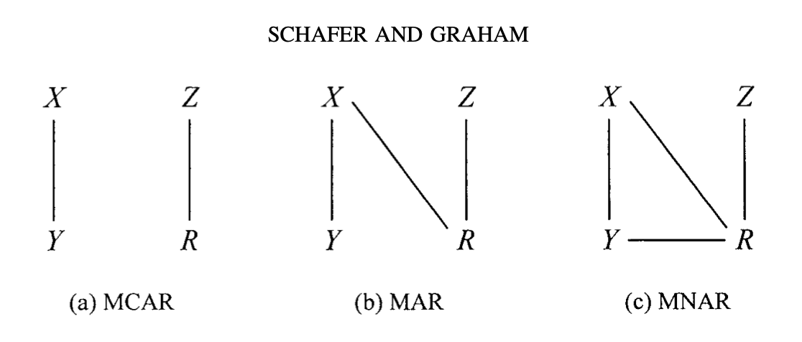
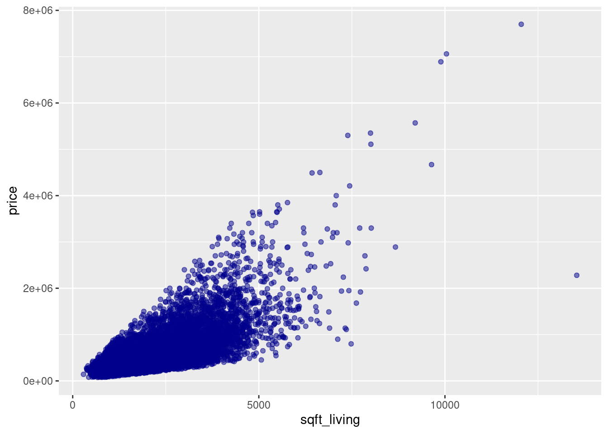
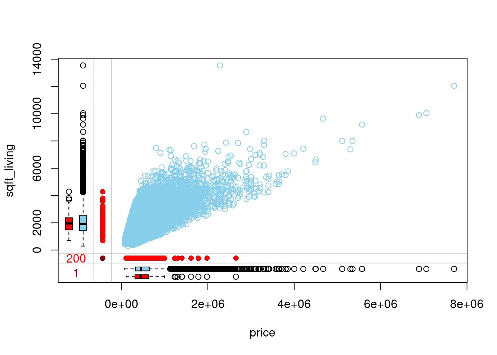

Code
#loading packages
library(DiagrammeR)Missing data occurs when there are missing values in a dataset. There are many reasons why this occurs. It can be intentional or unintentional and can be classified into the following three categories, otherwise known as missingness mechanisms (Mainzer et al. 2023):
Missing completely at random (MCAR) is the probability of missing data being completely independent of any other variables.
Missing at random (MAR) is the probability of missing data being related to the observed values.
Missing not at random (MNAR) is the probability of missing data being dependent on the missing and observed values.

Figure 1: Graphical Representation of Missingness Mechanisms (Schafer and Graham 2002)
(X are the completely observed variables. Y are the partly missing variables. Z is the component of the cause of missingness unrelated to X and Y. R is the missingness.)
Looking for patterns in the missing data can help us to determine to which category they belong. These mechanisms are important in determining how to handle the missing data. MCAR would be the best case scenario but seldom occur. MAR and MNAR are more common.
The problem with ignoring any missing values is that it does not give a true representation of the dataset and can lead to bias when analyzing. This reduces the statistical power of the analysis (van_Ginkel et al. 2020). To enhance the quality of the research, the following should be followed: explicitly acknowledge missing data problems and the conditions under which they occur and employ principled methods to handle the missing data (Dong and Peng 2013).
There are three types of methods to deal with missing data, the likelihood and Bayesian method, weighting methods, or imputation methods (Cao et al. 2021). Missing data can also be handled by simply deleting.
Listwise deletion is when the entire observation is removed from the dataset. Deleting missing data can lead to the loss of important information regarding your dataset and is therefore not recommended. In certain cases, when the amount of missing data is small and the type is MCAR, listwise deletion can be used. There usually won’t be bias but potentially important information may be lost.
T-tests and chi-square tests can be used to assess pairs of predictor variables to determine whether the groups’ means differ significantly. According to (van_Ginkel et al. 2020), if significant, the null hypothesis is rejected, therefore, indicating that the missing values are not randomly scattered throughout the data. This implies that the missing data is MAR or MNAR. Conversely, if nonsignificant, this implies that the data cannot be MAR. This does not eliminate the possibility that it is not MNAR–other information about the population is needed to determine this. Whenever missing data is categorized as MAR or MNAR, listwise deletion would be wasteful, and the analysis biased. Alternate methods of dealing with the missing data is recommended: either pairwise deletion or imputation.
Pairwise deletion is when only the missing variable of an observation is removed. It allows more data to be analyzed than listwise deletion but limits the ability to make inferences of the total sample. For this reason, it is recommended to use imputation to properly deal with missing data.
Imputation is the method of replacing missing data with an estimate obtained from the original, available data so there is a full data set to analyze. To improve statistical power, the number of imputations created should be at least equal to the percent of missing data (5% equals 5 imputations, 10% equals 10 imputations, 20% equals 20 imputations, etc.) (Pedersen et al. 2017). There are two types of imputation: single and multiple.
Single, or univariate, imputation is when only one estimate is used to replace the missing data. Methods of single imputation include using the mean, the last observation carried forward, and random imputation. The following is a brief explanation of each:
Using the mean to replace a missing value is a straight-forward process. The mean of the dataset is calculated, including the missing value. The mean is then multiplied by the number of observations in the study. Next, the known values are subtracted from the product, and this gives an estimate that can be used for any missing values. The problem with this method is that it reduces the variance which leads to a smaller confidence interval.
Last Observation Carried Forward (LOCF) is a technique of replacing a missing value in longitudinal studies with a previously observed value (the most recent value is carried forward) (Streiner 2008). The problem with this method is that it assumes that the previous observed value is perpetual when in reality that most likely is not the case.
Random imputation is a method of randomly drawing an observation and using that observation for any of the missing values. The problem with this method is that it introduces additional variability.
These single imputation methods are flawed. They often result in underestimation of standard errors or too small p-values (Dong and Peng 2013), which can cause bias in the analysis. Therefore, multiple imputation is the better method because it handles missing data better and provides less biased results.
Multiple, or multivariate, imputation is when various estimates are used to replace the missing data by creating multiple datasets from versions of the original dataset. It can be done by using a regression model, or a sequence of regression models, such as linear, logistic and Poison. A set of m plausible values are generated for each unobserved data point, resulting in m complete data sets (Dong and Peng 2013). The new values are randomly drawn from predictive distributions either through joint modeling (JM, which is not used much anymore) or fully conditional specification (FCS) (Wongkamthong and Akande 2023). It is then analyzed and the results are combined to obtain a single value for the missing data.
The purpose of multiple imputation is to create a pool of imputed data for analysis, but if the pooled results are lacking, then multiple imputation should not be done (Mainzer et al. 2023). Another reason not to use multiple imputation is if there are very few missing values; there may be no benefit in using it. Also worth noting is some statistical analyses software already have built-in features to deal with missing data.
Multiple imputation by chained methods, otherwise known as MICE, is the most common and preferred method of multiple imputation. It provides a more reliable way to analyze data with missing values. For this reason, this paper will focus on the methodology and application of the MICE process.
#loading packages
library(DiagrammeR)Figure 2: Flowchart of the MICE-process based on procedures proposed by Rubin (Wulff and Jeppesen 2017)
DiagrammeR::grViz("digraph {
# initiate graph
graph [layout = dot, rankdir = LR, label = 'The MICE-Process\n\n',labelloc = t, fontcolor = DarkSlateBlue, fontsize = 45]
# global node settings
node [shape = rectangle, style = filled, fillcolor = AliceBlue, fontcolor = DarkSlateBlue, fontsize = 35]
bgcolor = none
# label nodes
incomplete [label = 'Incomplete data set']
imputed1 [label = 'Imputed \n data set 1']
estimates1 [label = 'Estimates from \n analysis 1']
rubin [label = 'Rubin rules', shape = diamond]
combined [label = 'Combined results']
imputed2 [label = 'Imputed \n data set 2']
estimates2 [label = 'Estimates from \n analysis 2']
imputedm [label = 'Imputed \n data set m']
estimatesm [label = 'Estimates from \n anaalysis m']
# edge definitions with the node IDs
incomplete -> imputed1 [arrowhead = vee, color = DarkSlateBlue]
imputed1 -> estimates1 [arrowhead = vee, color = DarkSlateBlue]
estimates1 -> rubin [arrowhead = vee, color = DarkSlateBlue]
incomplete -> imputed2 [arrowhead = vee, color = DarkSlateBlue]
imputed2 -> estimates2 [arrowhead = vee, color = DarkSlateBlue]
estimates2-> rubin [arrowhead = vee, color = DarkSlateBlue]
incomplete -> imputedm [arrowhead = vee, color = DarkSlateBlue]
imputedm -> estimatesm [arrowhead = vee, color = DarkSlateBlue]
estimatesm -> rubin [arrowhead = vee, color = DarkSlateBlue]
rubin -> combined [arrowhead = vee, color = DarkSlateBlue]
}")Regression Imputation is based on a linear regression model. Missing data is randomly drawn from a conditional distribution when variables are continuous and from a logistic regression model when they are categorical (van_Ginkel et al. 2020).
Predictive Mean Matching is also based on a linear regression model. The approach is the same as regression imputation when it comes to categorical missing values but different for continuous variables. Instead of random draws from a conditional distribution, missing values are based on predicted values of the outcome variable (van_Ginkel et al. 2020).
Hot Deck (HD) imputation is when a missing value is replaced by an observed response of a similar unit, also known as the donor. It can be either random or deterministic (based on a metric or value) (Thongsri and Samart 2022). It does not rely on model fitting.
Stochastic Regression (SR) Imputation is an extension of regression imputation. The process is the same but a residual term from the normal distribution of the regression of the predictor outcome is added to the imputed value (Thongsri and Samart 2022). This maintains the variability of the data.
Random Forest (RF) Imputation is based on machine learning algorithms. Missing values are first replaced with the mean or mode of that particular variable and then the dataset is split into a training set and a prediction set (Thongsri and Samart 2022). The missing values are then replaced with predictions from these sets. This type of imputation can be used on continuous or categorical variables with complex interactions.
Multiple Imputation by Chained Equations (MICE)
In multiple imputation, m imputed values are created for each of the missing data and result in m complete datasets. For each of the m datasets, an estimate of \(\theta\) is acquired.
Combined estimator of \(\theta\) is given by:
\({\hat{\theta}}_{M}\)=\(\displaystyle \frac{1}{M}\)\(\sum_{m = 1}^{M} {\hat{\theta}}_{m}\)
The proposed variance estimator of \({\hat{\theta}}_{M}\) is given by:
\({\hat{\Phi}}_{M}\) = \({\overline{\phi}}_{M}\)+(1+\(\displaystyle \frac{1}{M}\))B\(_{M}\)
where \({\overline{\phi}}_{M}\) = \(\displaystyle \frac{1}{M}\)\(\sum_{m = 1}^{M}\)\({\hat{\phi}}_m\) and B\(_{M}\) = \(\displaystyle \frac{1}{M-1}\)\(\sum_{m = 1}^{M}\)(\({\hat{\theta}}_{m}\)-\({\overline{\theta}}_{M}\))\(^{2}\)
For the purpose of this project, we uitilized Multiple Imputation (MI) for the credit dataset (dataset consists of 14 variables: status, home, time, age, marital, records, job, expenses, income, assets, debt, amount, price).
In R which is a statistical programming software, we created 5 datasets with imputed values using the MICE package (Multivariate Imputation by Chained Equations) which can seamlessly impute missing values in a dataset by looking at the data from other columns and estimate the best prediction for each missing value.
Before imputing the missing data, it is important to check whether the data has a linear relationship. Nonlinear data should be accounted for in the analysis as well as the imputation process. Otherwise, an incorrect statistical model will result. It is also important to check for anomalies that may occur during imputation. Imputation models may need to be adjusted if the imputed values fall outside the minimum and maximum range of the observed values. More or fewer variables in the imputation model may be needed for these types of anomalies.
# credit[is.na(credit) | credit=="Inf"] = NA
# lm(Amount ~ Seniority + Home + Time + Age + Marital + Records + Job + Expenses + Income + Assets + Debt + Seniority + Price, data = credit)
# credit_model = lm(formula = Amount ~ Seniority + Home + Time + Age + Marital + Records + Job + Expenses + Income + Assets + Debt + Seniority + Price, data = credit)The chained equation process can be broken down into four general steps:
Step 1: A simple imputation, such as imputing the mean, is performed for every missing value in the dataset. These mean imputations can be thought of as “place holders.” Step 2: The “place holder” mean imputations for one variable (“var”) are set back to missing. Step 3: The observed values from the variable “var” in Step 2 are regressed on the other variables in the imputation model, which may or may not consist of all of the variables in the dataset. In other words, “var” is the dependent variable in a regression model and all the other variables are independent variables in the regression model. These regression models operate under the same assumptions that one would make when performing linear, logistic, or Poison regression models outside of the context of imputing missing data. Step 4: The missing values for “var” are then replaced with predictions (imputations) from the regression model. When “var” is subsequently used as an independent variable in the regression models for other variables, both the observed and these imputed values will be used. Step 5: Steps 2–4 are then repeated for each variable that has missing data. The cycling through each of the variables constitutes one iteration or “cycle.” At the end of one cycle all of the missing values have been replaced with predictions from regressions that reflect the relationships observed in the data. Step 6: Steps 2–4 are repeated for a number of cycles, with the imputations being updated at each cycle.
Evaluate data and select independent variables
Create m sets of data from original dataset with missing values
Perform analysis on each of the m sets
Average the estimates across m estimates. Calculate the standard errors and variance of m estimates. Combine using an adjustment term (1+1/m).
# load data
credit = read.csv("credit_data.csv")
# load packages
library(gtsummary)Credit score data
The credit_data.csv file contains data of 4,454 subjects and stores a combination of continuous, categorical and count values for 15 variables. Of the 15 variables, the “Status” variable contains binomial categorical values of “good” and “bad” to describe the kind of credit score each subject has.
| Variable | Type | Description |
|---|---|---|
| X | Integer | Observation number of subject |
| Status | Character | Describes credit score of subject: “good” or “bad” |
| Seniority | Integer | ? |
| Home | Character | Home owner status of subject: “rent” “owner” “parents” |
| Time | Integer | ? |
| Age | Integer | Age of subject in years |
| Marital | Character | Marital status of subject: “married” “single” “widow” |
| Records | Character | ? |
| Job | Character | Job type of subject: “fixed” “freelance” “partime” |
| Expenses | Integer | ? Monthly/Annually ? |
| Income | Integer | ? Annual income of subject (dollar amount in thousands?) |
| Assets | Integer | Dollar amount of assets of subject (in thousands?) |
| Debt | Integer | Dollar amount of debt of subject (in thousands?) |
| Amount | Integer | ? |
| Price | Integer | ? |
# load library
library(mice, warn.conflicts=FALSE)
library(ggplot2)
library(dplyr, warn.conflicts=FALSE)
library(cowplot)
credit$Amount [1] 800 1000 2000 900 310 650 1600 200 1200 1200 1150 650 1500 600
[15] 400 900 1500 600 1100 1250 1500 1100 600 950 1350 700 1000 1800
[29] 600 1500 1100 400 450 1000 1100 700 500 800 950 1125 1300 900
[43] 950 1250 1500 1150 2100 1500 450 750 1600 900 1200 900 500 1000
[57] 1000 500 600 800 1830 1100 600 1000 1000 1350 600 1200 850 2000
[71] 900 1000 600 800 700 1000 500 900 1750 900 1000 550 850 1000
[85] 1000 500 600 1426 1040 1000 950 1490 750 800 1400 1000 250 950
[99] 1500 800 1500 1100 600 650 1950 400 900 1200 1600 350 950 1500
[113] 1340 1000 670 1200 800 460 950 700 600 900 1800 1300 1100 2380
[127] 1400 1550 650 1000 950 1400 1300 600 700 1300 900 1150 1100 500
[141] 800 1000 3800 1000 900 1300 850 700 600 1200 300 1000 1100 1300
[155] 1400 1500 900 1200 700 500 1550 1100 1500 200 800 930 900 600
[169] 600 1300 1000 1350 1275 1400 600 1886 1200 600 800 300 900 950
[183] 1400 1200 1200 1400 1100 1200 600 700 200 1000 1000 500 1600 1000
[197] 950 1177 870 1200 1050 1000 1700 700 1100 750 1200 1500 400 800
[211] 1000 400 1000 750 1200 750 1100 1000 1000 1100 900 1900 1370 1000
[225] 984 1000 300 2000 1800 1000 600 1500 800 1150 800 455 1200 1700
[239] 600 1300 700 1350 1500 600 1000 1700 950 600 800 1260 1540 1200
[253] 700 1200 1100 1200 700 1300 1000 250 700 800 900 1660 200 1000
[267] 770 700 3000 700 1000 1900 1000 1000 900 750 900 1000 650 400
[281] 1000 550 1200 2000 1700 1100 1500 1200 1100 1000 400 1400 1200 3000
[295] 1030 1000 875 500 1000 750 950 1050 350 1150 1200 1400 1300 2000
[309] 1400 500 1200 3250 1300 1000 1400 700 600 1500 600 1200 1100 700
[323] 1100 1000 1190 1150 1450 1900 600 1000 825 1080 1900 1030 800 700
[337] 850 1550 1200 1000 1500 1100 1000 600 1100 1400 1850 170 200 500
[351] 1250 1250 890 600 1000 1600 300 1550 1100 750 1000 1400 900 600
[365] 1500 200 860 1000 1000 500 800 300 300 1300 1300 1000 1100 200
[379] 600 400 1000 1200 1000 1150 200 1000 1300 850 1000 1300 500 1200
[393] 1700 1500 1400 910 500 1000 600 2200 1200 400 1350 1200 1150 1400
[407] 1400 700 1500 1250 1900 1600 1400 1000 1400 790 1200 500 1150 2400
[421] 450 1100 1350 1100 700 425 1400 900 1135 890 1100 1200 850 800
[435] 1000 1300 950 1500 1000 1200 250 700 700 2150 850 1100 1850 1340
[449] 1100 450 870 1100 700 1000 360 500 1400 1100 1450 1500 1350 1500
[463] 757 1200 1400 1350 1500 1100 1100 1400 700 850 1050 1200 1800 1000
[477] 800 1200 900 1050 900 1000 1800 1500 1400 1300 500 1000 450 1000
[491] 1350 1400 800 1850 1150 950 1800 750 900 800 1500 1000 1200 1500
[505] 500 1000 1700 1600 1000 800 1100 970 1100 500 350 1500 1300 2200
[519] 800 1500 1000 1200 200 1350 260 1200 450 1250 700 650 1000 1100
[533] 1000 1300 250 850 1220 1300 1700 600 1000 1200 450 750 1500 800
[547] 2375 870 1210 1500 600 1000 900 830 700 825 1920 800 1360 1700
[561] 1700 700 375 500 1000 1000 1400 900 1100 1420 1020 900 1100 1500
[575] 1200 340 900 600 900 1160 1200 1200 1100 1100 1450 1000 500 400
[589] 800 780 1120 1100 800 1100 500 1000 1100 1200 1470 1050 2000 1650
[603] 1000 360 300 690 1400 1000 500 300 1500 600 1000 1200 500 425
[617] 1700 500 950 1370 850 1100 1000 1600 1150 675 900 650 1000 1100
[631] 950 950 1350 650 900 1100 600 800 900 1100 700 1300 1600 900
[645] 1300 1400 1400 1000 1150 1300 1950 1550 250 1200 1600 1000 1000 2075
[659] 380 1450 400 1150 1500 1400 1000 1200 1200 750 1680 1200 1000 1650
[673] 1000 1200 1300 1550 1380 1300 700 600 1650 1200 700 375 1150 370
[687] 1000 1250 1100 1000 1600 1150 1900 500 1000 1000 1350 800 900 1800
[701] 1420 300 1000 850 1550 1000 1000 900 1000 800 950 1300 1200 1250
[715] 1055 1400 650 1400 350 1000 600 1600 750 1450 950 450 1100 1600
[729] 1760 450 1000 500 1400 1400 350 1000 500 530 1200 1300 500 1500
[743] 500 1350 800 1900 800 500 900 350 1200 250 1000 1210 2000 1300
[757] 900 1571 900 300 300 1700 3000 550 1200 450 2400 1250 800 1400
[771] 900 1200 1700 1400 750 700 1100 700 1350 800 1000 400 800 600
[785] 700 1400 1000 1060 768 1300 350 1000 1200 1600 300 1000 1000 900
[799] 1000 1000 700 900 500 850 1150 950 1050 950 400 1400 800 675
[813] 1800 978 1130 1600 800 1400 600 1100 650 2100 1100 400 400 500
[827] 1000 1150 1000 900 1100 750 1150 350 250 1200 1500 1000 600 1700
[841] 600 400 800 625 1100 300 125 850 1250 1000 400 1000 915 1000
[855] 600 475 1150 650 1900 1800 350 1100 1800 3075 1250 200 900 1000
[869] 860 800 1100 1500 1300 450 600 1000 700 700 970 1600 1100 1000
[883] 900 900 800 1500 850 800 2400 600 750 300 1000 1000 900 900
[897] 1270 1300 1800 925 1750 500 1100 800 350 1200 1000 950 1000 1550
[911] 300 1000 1000 2000 1250 700 1650 400 1300 900 2600 1000 1250 1150
[925] 1400 400 240 920 750 1480 375 2500 1400 1450 2000 1298 425 1400
[939] 1100 600 600 275 580 850 700 1300 579 700 763 960 1075 1000
[953] 1500 1800 600 1000 1100 1000 1000 600 940 100 350 1000 1200 850
[967] 475 1150 1050 700 1700 1500 1000 100 1100 1100 1000 1600 750 700
[981] 1350 1200 1200 1550 400 950 900 600 1700 500 1200 1500 1000 300
[995] 250 1450 500 1000 1000 625 850 2000 1000 500 1000 300 1250 950
[1009] 500 1400 950 850 1600 1210 600 300 2350 850 1220 700 700 650
[1023] 650 750 1250 500 475 1550 800 300 1125 600 1400 512 1000 900
[1037] 1200 650 1550 1100 1100 1850 500 950 1600 1400 1100 1350 650 800
[1051] 700 850 1700 1440 500 1200 1400 750 1250 500 1000 1200 1000 500
[1065] 1000 1000 1350 500 1400 1650 800 1100 1900 750 950 1000 1000 700
[1079] 1100 1000 105 400 1250 933 600 1330 1350 475 900 400 1000 925
[1093] 950 1000 400 500 800 550 1300 850 475 950 300 900 650 400
[1107] 1600 1500 1000 500 1400 2000 1000 1500 490 900 1390 1000 1500 1200
[1121] 1100 1000 1200 1400 1200 1250 860 600 1000 750 900 350 600 2000
[1135] 1100 700 1250 1100 1150 1500 850 1600 1500 300 1080 700 950 600
[1149] 600 350 1000 680 450 1000 1000 1250 650 800 500 1450 1500 950
[1163] 400 650 500 1200 1800 1000 1650 1000 1400 984 200 1400 940 900
[1177] 1000 900 1500 480 1050 700 1500 600 1400 450 400 1300 850 800
[1191] 1150 900 800 1400 1000 1520 1850 650 200 500 650 2000 700 1500
[1205] 978 1000 800 800 300 1090 600 1100 1300 700 750 1500 1500 300
[1219] 525 2000 1090 800 1000 1600 1600 1300 250 500 700 2100 500 1000
[1233] 1060 300 1300 1900 1150 1100 1100 1000 1660 600 600 1300 1000 350
[1247] 900 1000 835 1500 325 1100 1650 500 1250 1400 1370 775 700 850
[1261] 1450 1000 1250 900 1150 1400 900 400 1650 1200 1000 1900 1550 1200
[1275] 360 850 625 1570 700 1200 250 1300 750 1500 1000 240 1000 750
[1289] 600 1800 450 700 2047 1300 750 520 775 400 600 300 500 1000
[1303] 1550 1150 1300 2375 1000 250 1000 125 1200 3800 350 2000 600 900
[1317] 700 1400 1200 2100 1300 1000 750 1450 3900 950 700 500 1000 1050
[1331] 500 200 1000 1030 375 1800 500 600 860 900 1200 1400 850 600
[1345] 900 1300 1500 2000 380 750 1150 700 150 850 1300 900 2000 1000
[1359] 1450 1990 825 300 380 700 700 1450 1650 1030 1000 1500 300 1300
[1373] 1275 650 1500 1100 600 1000 1000 600 1150 1100 525 900 1200 1300
[1387] 1300 1200 100 1900 325 750 800 1000 800 1000 550 1000 400 1100
[1401] 1300 1250 1250 450 1100 580 1000 1500 1100 1060 1100 700 400 1000
[1415] 1000 1400 1150 1000 1000 1035 1650 1000 450 300 1200 1400 1600 1200
[1429] 1000 1300 600 1300 1000 1570 1000 400 800 500 600 1450 500 500
[1443] 1170 1400 400 1750 625 700 800 700 1400 1100 300 1000 1550 500
[1457] 800 1640 1600 300 400 1300 350 1950 450 500 500 300 2100 1175
[1471] 400 1300 1150 1300 1300 1580 1400 1050 775 1030 1500 1400 1300 2000
[1485] 1000 800 1200 900 1000 1300 1000 870 770 1300 1000 850 600 475
[1499] 1400 1100 610 1800 1600 900 1400 800 1500 175 900 460 1000 250
[1513] 1000 400 1000 700 950 1200 750 1900 1150 1100 1450 1350 500 1175
[1527] 1900 690 800 600 1000 500 900 800 850 1800 1600 900 1500 1150
[1541] 1000 500 400 1000 1200 1300 550 1300 1700 900 700 700 400 1250
[1555] 1100 1500 1450 1540 400 1000 1000 600 430 480 1250 2000 800 800
[1569] 800 450 1600 1300 800 1500 1500 500 670 1650 500 1100 1100 1400
[1583] 675 700 1450 1200 1170 450 900 1000 1000 1200 1100 375 1000 1600
[1597] 1100 1000 1150 750 1000 500 500 200 2500 1600 1300 1250 1250 1000
[1611] 1200 950 500 1800 1000 1400 1000 700 1385 1000 1400 500 1000 375
[1625] 1000 800 1300 1500 700 1000 1400 800 650 940 1150 1100 1000 1280
[1639] 400 500 800 970 900 1100 1000 1510 1500 700 887 1300 1300 550
[1653] 1500 800 500 1350 2250 1400 1100 500 400 600 1700 1200 200 1300
[1667] 1870 1000 475 740 600 1400 1300 800 600 1300 1350 1100 1100 700
[1681] 1500 1900 1170 600 1100 1000 1700 2180 1590 700 1200 1000 1700 1300
[1695] 700 425 1350 1200 900 1000 1500 1000 525 1400 450 1475 830 1000
[1709] 1400 1100 1000 1000 1400 1500 1000 700 450 750 1000 150 800 1000
[1723] 1000 1500 600 1465 425 1100 1100 900 1350 1100 700 820 2250 700
[1737] 1300 1400 1000 1400 1200 1000 1220 200 1300 1500 1500 770 1100 1000
[1751] 1220 1300 1100 1200 2000 350 1250 1000 700 950 1200 1145 450 1000
[1765] 425 1500 300 560 350 1000 1200 550 900 1300 1075 943 450 600
[1779] 1300 1225 1700 1350 400 1450 1000 1400 1300 2700 1200 400 1000 600
[1793] 1450 900 1310 900 2750 1275 1700 1550 1100 1318 450 1150 1000 600
[1807] 1800 1000 900 2200 400 1650 1150 930 1200 687 800 500 700 2000
[1821] 500 1650 750 1400 1350 1300 600 1650 280 850 750 800 250 400
[1835] 1550 370 600 600 1700 1500 1150 400 1500 175 200 1530 1100 1000
[1849] 795 600 500 900 1200 1100 800 1350 800 2500 900 1100 1086 1000
[1863] 1200 1700 1100 1350 1000 1300 1300 1600 1000 875 1250 800 740 500
[1877] 1700 700 1600 1000 1150 550 2000 1000 750 850 1600 575 660 1500
[1891] 800 950 5000 1250 800 1250 1250 2100 250 1300 250 1200 800 1250
[1905] 1450 1100 500 1300 1350 1660 1000 1000 700 175 600 400 1000 1400
[1919] 750 1200 1150 1350 800 1500 1500 800 850 500 2000 1400 1085 500
[1933] 200 1400 1000 1000 700 500 1740 1245 1500 400 500 800 700 1800
[1947] 1900 350 2000 500 600 800 800 1400 800 850 500 300 1500 1400
[1961] 675 600 750 600 1200 1700 600 550 350 1250 1100 700 800 600
[1975] 350 600 1200 550 1500 1400 1350 750 1340 2000 1350 1250 900 1300
[1989] 1200 1600 1500 1000 800 1300 500 350 1300 1500 700 350 750 1100
[2003] 1000 750 1200 1000 2000 1000 1000 2500 1100 1050 550 1200 1300 700
[2017] 1450 1350 600 1300 400 600 400 1150 1600 800 850 600 600 900
[2031] 775 800 1000 750 500 100 1500 1750 350 450 625 1700 1000 1300
[2045] 800 700 1100 1550 700 2000 1650 1000 500 800 1100 600 1350 950
[2059] 600 1500 800 1450 1000 1150 800 1250 1250 800 1350 1200 1550 500
[2073] 400 1300 325 450 500 1500 1100 1150 1070 1500 1200 1750 1300 2500
[2087] 2000 2000 1000 780 800 1800 600 1150 1000 900 700 900 1000 350
[2101] 1000 1600 700 1000 300 1300 1000 1400 2500 983 500 1000 1100 600
[2115] 2000 1800 1450 900 1000 1500 1000 1600 800 500 1150 760 800 850
[2129] 1250 700 1100 1000 700 650 1100 1650 1200 750 1400 1600 750 1000
[2143] 900 450 1350 550 1000 275 1450 400 1575 660 690 1450 500 2700
[2157] 600 950 700 1600 1420 1250 1100 950 1400 1500 600 400 960 280
[2171] 400 600 1000 2100 1500 700 225 500 800 910 1000 1000 1350 1330
[2185] 550 1200 500 1100 550 500 600 1195 1150 1300 1200 325 1370 930
[2199] 1800 900 800 1400 1300 1500 2000 1000 1500 1100 870 600 500 1140
[2213] 450 700 400 1000 700 1400 600 1000 700 300 1600 750 1050 1000
[2227] 190 450 1650 1250 780 660 1000 1320 950 870 800 600 900 700
[2241] 2900 1575 1400 1000 1400 900 1050 1000 1500 1200 1000 200 500 1800
[2255] 975 1100 1000 1100 700 800 1600 1300 1300 1500 1050 800 1600 1300
[2269] 900 1700 1600 1100 350 850 900 1280 1635 700 450 1300 1500 250
[2283] 700 1000 500 1180 1000 500 750 800 500 2050 850 1500 1250 600
[2297] 525 1400 1150 650 300 1000 1200 150 1650 850 400 1250 1000 1100
[2311] 500 600 400 880 850 1070 400 1350 700 1000 800 900 800 1000
[2325] 1250 1200 375 1000 1000 1000 1500 1000 1000 750 950 1000 600 1300
[2339] 1500 600 850 1100 1618 350 700 1870 1100 1300 1100 400 400 400
[2353] 435 1400 900 900 949 1200 1020 1100 1000 500 750 300 1700 1200
[2367] 600 1350 1800 1100 350 1000 250 650 1500 800 700 1000 950 850
[2381] 900 900 800 500 2000 1200 900 1400 1350 4000 500 1500 500 1500
[2395] 590 350 850 1200 2000 800 2000 1000 900 1450 550 500 500 700
[2409] 1000 200 1000 900 500 1100 1400 1200 1400 500 1400 1500 1200 1300
[2423] 2700 1550 600 950 1450 965 1450 1400 1140 550 480 1350 1000 500
[2437] 2000 1200 400 350 1600 900 230 1000 1300 1000 1450 1000 1500 820
[2451] 200 1300 1700 1250 800 1100 400 1300 2000 650 2400 900 650 1000
[2465] 700 1000 700 1050 2000 900 775 1000 700 825 850 3875 1200 500
[2479] 1000 1500 1000 1350 700 700 1400 1350 1000 1250 1250 600 1000 250
[2493] 1000 1300 290 550 750 1100 900 600 500 1600 800 600 850 1450
[2507] 1300 300 1033 650 200 350 600 625 1200 725 700 1700 1200 1500
[2521] 800 1050 1400 900 1500 1300 1100 1090 500 1200 600 1000 900 740
[2535] 1700 1000 1000 200 675 1100 1800 900 475 1100 600 730 1897 1700
[2549] 700 525 1500 600 300 1500 1100 1000 400 980 1500 1100 1250 1150
[2563] 2000 1150 1200 900 650 1400 1300 1100 1500 800 2000 1300 1100 1100
[2577] 1530 1500 1170 550 1200 1400 1420 1050 700 319 1000 500 1100 600
[2591] 2000 450 1200 1500 1050 250 700 800 1300 1050 1200 1100 250 1300
[2605] 650 1200 1200 1080 1200 1600 1100 700 400 1300 650 700 900 900
[2619] 1000 1450 800 600 1200 700 1200 800 800 1300 800 500 400 1500
[2633] 2300 225 1200 700 316 2300 1000 1000 400 1200 200 1000 2800 750
[2647] 1100 1500 600 1600 1000 1300 1300 700 1400 1000 775 500 1435 500
[2661] 850 800 1350 1200 1300 800 850 1800 1400 600 1000 1000 1250 1500
[2675] 575 950 1000 800 500 1000 1200 1600 760 1700 1400 1300 750 1350
[2689] 1000 4500 1332 1000 1450 800 1350 750 1230 1200 890 1200 600 1200
[2703] 1000 1200 1000 1100 1350 1500 1550 300 100 1050 700 1200 1400 1000
[2717] 550 475 800 900 950 1200 240 1000 1800 1200 1000 800 500 500
[2731] 1000 1805 600 944 1500 750 800 1000 250 1300 1050 1000 850 1500
[2745] 600 750 500 400 900 600 900 1000 1400 500 1200 1350 1000 900
[2759] 1388 1600 1000 600 250 1500 650 1600 850 850 900 1000 1200 500
[2773] 1100 1200 1450 950 900 3000 1000 1000 550 1400 1000 1300 950 650
[2787] 1050 850 750 900 830 1500 2000 1400 400 800 1000 1800 580 1150
[2801] 1600 600 900 175 1600 700 1000 600 645 660 600 2000 1000 1500
[2815] 1000 2500 1000 500 1050 450 1300 1600 500 800 2000 1700 1800 800
[2829] 1000 550 1700 1450 1000 875 750 1400 1350 1450 1200 1600 1400 1450
[2843] 800 900 1000 800 900 650 400 800 750 600 950 2500 960 900
[2857] 600 1150 1600 650 550 1000 325 1143 1678 1500 1200 350 400 715
[2871] 1400 1500 1000 1250 1250 1000 1300 500 1350 1000 1000 1000 880 1000
[2885] 250 1000 1000 850 400 1300 350 1300 300 400 1600 600 1350 325
[2899] 1500 1050 600 1300 350 350 1000 1150 1606 1000 1200 1150 850 790
[2913] 500 1000 1550 1000 1000 1000 1000 1400 600 1800 1000 1600 1000 500
[2927] 600 1200 800 800 1050 700 800 400 400 1550 900 800 1100 1400
[2941] 1250 500 700 1400 895 850 1000 500 1500 950 4000 200 800 1250
[2955] 1000 1000 1100 1000 1200 1150 1000 1000 600 700 200 1400 1050 1400
[2969] 680 1000 1500 1500 880 750 1600 900 1230 1250 2300 1300 1200 850
[2983] 750 500 1000 750 1370 1500 1200 800 600 1126 500 2000 200 700
[2997] 1400 200 1700 2000 1000 1200 400 1300 1200 1350 300 2220 948 900
[3011] 400 650 1000 2400 800 1300 1300 950 900 1700 900 500 700 700
[3025] 1100 1400 900 1000 1000 1400 1000 400 900 1270 1000 950 700 500
[3039] 1000 1600 1000 250 1080 600 1600 1050 1400 650 1000 850 1150 1800
[3053] 950 1400 650 1200 1000 1050 1000 1570 1500 1100 400 1000 1100 500
[3067] 1150 200 500 850 1900 700 1250 1600 1000 800 800 1000 500 1700
[3081] 1000 800 1400 1370 1040 1000 1300 240 1000 1500 600 700 600 390
[3095] 500 900 1889 1000 1200 1750 650 1000 1650 800 650 2200 1400 650
[3109] 250 1500 800 700 600 1250 1000 800 1000 1100 1048 1100 1100 1250
[3123] 400 1250 1500 1450 1000 900 1250 1600 1130 200 990 900 900 1500
[3137] 650 1000 4000 700 1250 1500 2000 1300 700 225 1300 590 2000 500
[3151] 750 500 1200 900 1350 1450 1150 970 800 400 400 800 250 700
[3165] 250 1000 200 1190 1300 1300 475 1950 200 1795 700 250 1000 1650
[3179] 860 750 375 900 500 800 2000 1000 1200 400 1300 500 850 1000
[3193] 1400 1000 900 1000 850 600 1400 2000 1000 450 1300 800 1500 1400
[3207] 1100 400 1300 1250 1400 1000 1400 1385 1000 1000 1750 700 1350 1100
[3221] 300 1500 1900 1200 800 1300 1900 1100 900 850 550 1800 1200 1200
[3235] 820 1050 1700 500 1200 350 2000 800 450 700 1000 1575 1300 1400
[3249] 2000 1200 450 1300 1000 1200 1000 1600 750 1200 1000 350 250 1220
[3263] 650 2800 1450 800 1300 900 1000 1450 370 600 650 800 1100 1285
[3277] 2400 1700 1100 1300 1650 800 690 1700 500 1370 1000 2000 250 325
[3291] 650 325 1000 1050 1600 600 550 500 1250 1050 1200 1350 900 1800
[3305] 1078 3000 1250 375 600 2370 1070 975 750 1200 1400 500 850 1100
[3319] 1300 775 800 800 1200 800 720 750 1700 1100 350 700 1500 1300
[3333] 1200 1000 1980 1300 1700 3000 900 1550 1070 450 1750 525 1600 900
[3347] 2400 2000 600 400 1050 1900 1300 475 1000 1800 900 400 1100 1100
[3361] 400 1250 1200 1700 1300 600 1000 1200 1000 500 1500 860 1400 500
[3375] 265 1500 1400 850 800 1550 1500 1600 1150 1150 1100 1650 600 1300
[3389] 1150 1000 700 850 820 330 1500 1000 1000 1500 400 225 1950 400
[3403] 1350 200 900 200 1350 800 1150 1650 600 250 400 900 1000 950
[3417] 400 1600 700 175 200 1000 880 150 300 900 500 1300 900 950
[3431] 500 1100 950 800 800 1000 1350 300 300 1050 1350 1000 921 700
[3445] 1500 600 1000 320 500 1050 500 1000 1500 2000 1650 375 1150 1500
[3459] 315 450 1300 1000 1050 1450 1550 1800 1000 650 1300 900 1130 1000
[3473] 300 800 1000 1000 1100 600 800 1050 250 550 500 1100 1125 950
[3487] 500 800 1800 549 1200 1450 3000 1250 1000 1300 870 1250 900 400
[3501] 1100 1200 500 1650 1000 1300 1300 1060 900 600 1100 1000 1100 830
[3515] 2550 700 1300 1000 600 1000 600 1200 180 1000 800 1250 1500 1186
[3529] 2300 650 1200 1100 1200 1500 600 800 300 800 750 1800 750 1000
[3543] 1350 1100 500 300 800 1450 1080 800 1850 1200 1500 250 700 2000
[3557] 1300 1300 1250 1350 500 1000 1300 310 950 600 2250 1500 1658 850
[3571] 2500 1500 300 1200 800 1400 1050 1300 650 1100 1200 1350 800 500
[3585] 1000 360 1200 1500 400 120 1000 2000 900 1200 1200 1260 440 1000
[3599] 700 950 250 900 1400 1030 1000 1000 1000 750 1100 800 900 800
[3613] 400 1500 300 1750 400 900 1500 1300 1250 1100 1300 800 1400 700
[3627] 825 800 1360 800 1000 1300 800 400 650 2000 1450 650 1250 900
[3641] 1000 1600 800 1500 1157 800 1200 200 570 400 1250 1580 1000 1350
[3655] 600 950 1300 1500 400 650 1000 600 675 450 2000 2400 1300 900
[3669] 1000 1100 2400 600 1000 500 1000 900 1250 500 1300 700 900 1300
[3683] 1000 1000 950 1000 1000 800 1600 1250 800 800 1200 2250 800 600
[3697] 600 900 800 270 1600 1600 2000 600 700 540 550 350 650 830
[3711] 1500 600 1200 480 700 800 450 500 1250 750 1500 1050 875 800
[3725] 1300 1150 1520 200 1500 700 1650 600 1000 800 950 2000 1100 1100
[3739] 900 500 1100 1400 1825 2000 1500 500 950 1100 1200 1150 1000 1100
[3753] 1400 1000 1350 1350 800 900 700 1500 1150 1300 1500 300 590 700
[3767] 1000 600 1000 1600 1100 1300 3000 1000 1000 1800 1300 1000 700 107
[3781] 920 1580 1650 850 550 1400 950 500 1400 1300 1200 450 1150 750
[3795] 1050 800 400 2500 1600 500 1600 1400 1000 1200 1450 1700 1100 1500
[3809] 450 800 1700 1500 1300 635 1390 1400 1300 1250 1100 850 500 1050
[3823] 1000 1500 900 430 1250 1000 350 1035 1850 1100 525 300 1300 1300
[3837] 1750 850 900 1450 800 1250 1400 900 1300 1500 300 200 1350 1000
[3851] 375 800 1000 1500 1950 2000 400 1100 1300 400 1100 1300 1000 360
[3865] 1320 800 1060 1500 850 700 940 1100 450 1000 650 1500 1300 1250
[3879] 1100 594 400 1000 700 1000 800 900 900 400 1345 1500 1300 1000
[3893] 1000 450 930 900 1300 2200 1250 750 1900 1500 1690 1500 1250 600
[3907] 1200 1500 1050 1200 1600 1200 300 875 1500 1000 550 1160 430 1000
[3921] 1000 1200 2275 500 400 1650 650 4000 700 700 760 575 1000 375
[3935] 830 2000 725 2500 1950 800 1500 650 1500 750 1500 1800 450 900
[3949] 2000 1050 2500 1400 2000 1100 1300 1150 950 1000 800 1100 700 1550
[3963] 850 1000 800 1000 900 500 1050 1100 1400 1600 1100 1250 1800 1300
[3977] 1200 125 850 500 1800 900 200 1000 400 1300 1750 875 1800 1150
[3991] 1100 1350 1300 1250 1300 1375 150 1350 1340 1550 800 1100 2000 900
[4005] 1380 1370 700 1750 1450 1100 1500 1000 1200 1700 1200 1650 1250 700
[4019] 1250 1200 1475 1500 2200 500 2000 1100 2000 600 1150 900 450 1100
[4033] 1000 1300 1300 1000 1308 1150 900 1450 1400 800 1980 1000 600 1150
[4047] 1900 930 600 1600 500 1250 1600 1000 1400 1400 1800 800 1000 1000
[4061] 1500 1450 450 1000 1500 1700 1400 3000 1800 900 1500 660 600 1895
[4075] 700 950 1200 400 800 1287 300 375 1200 900 1250 450 1400 750
[4089] 1200 800 1150 400 900 1900 1080 500 1350 1450 1100 650 1000 900
[4103] 900 1200 600 800 500 1500 1900 700 350 500 1400 625 700 1400
[4117] 800 1000 1200 1143 1000 1500 1000 400 1000 1100 1000 1150 1550 900
[4131] 535 1360 500 500 1800 1000 1000 800 1300 800 1400 900 675 1100
[4145] 1200 1000 900 750 1200 650 1000 1000 1000 1000 1650 400 1850 250
[4159] 800 1500 800 400 1000 700 1250 800 1100 700 1000 900 850 700
[4173] 375 1300 1200 1400 1100 1000 800 550 1000 900 1000 600 1175 1250
[4187] 1300 1000 500 1000 600 700 800 1100 1250 850 1200 1800 500 400
[4201] 1000 1000 1250 1300 600 1000 1000 1450 1000 500 700 900 800 350
[4215] 850 1100 1200 250 800 760 1150 1300 250 1000 700 675 1450 1000
[4229] 1600 1350 1400 650 1000 1300 1220 1300 850 275 1400 900 1200 1200
[4243] 475 1150 600 1300 1000 850 1500 800 900 1600 1000 550 900 1550
[4257] 1300 800 1600 1000 900 1200 1100 1000 1500 1090 1750 1600 1400 1200
[4271] 1500 900 350 1300 2800 1100 1900 700 1300 1100 1150 1070 325 1200
[4285] 600 1200 535 500 1150 1400 250 1000 1250 250 1500 1000 1000 1400
[4299] 1350 1400 900 500 650 600 900 500 800 1300 1100 1260 1050 1150
[4313] 900 1600 1500 1100 550 800 700 800 1065 1000 950 1400 1400 550
[4327] 1550 900 950 1000 1150 1200 800 1500 2000 1340 1175 275 700 800
[4341] 1400 1350 1100 1000 400 700 700 500 2000 1500 500 500 700 380
[4355] 850 400 275 3000 1300 1200 1543 1450 600 2700 800 1000 1000 1300
[4369] 3000 900 1150 700 1600 600 1100 600 750 1000 1500 900 400 1350
[4383] 1000 1100 1900 2500 1000 600 1350 1150 1350 2100 300 400 425 1400
[4397] 1720 700 1600 1150 950 1400 300 1442 700 750 1200 900 650 1000
[4411] 1500 1350 500 2500 700 600 600 900 1160 2000 1150 1200 1500 900
[4425] 2200 1400 1300 875 1300 650 400 1500 1200 875 1200 1400 1280 400
[4439] 1400 1000 1460 950 1000 1500 1200 1450 1500 900 1200 900 950 500
[4453] 550 1350ggplot(credit, aes(Amount, fill = credit, color = credit)) +
geom_histogram(color = "#000000", fill = "#0099F8") +
ggtitle("Variable distribution") +
theme_classic() +
theme(plot.title = element_text(size = 18))`stat_bin()` using `bins = 30`. Pick better value with `binwidth`.
# # TRANSFORM TO LONG DATA FOR PLOTS
# credit.Long<- credit %>% pivot_longer(!y, names_to="credit", values_to="score", values_transform=list(score=as.numeric))
#
# # HISTOGRAMS
# ggplot(credit, aes(Amount, fill=credit, color=credit)) +
# geom_histogram(alpha=0.2, breaks=seq(0,5,1)) +
# lemon::facet_rep_wrap(.~credit, nrow=2, labeller="label_both", repeat.tick.labels=T) +
# labs(title="Distributions of Raw Score") +
# theme_bw() +
# theme(legend.position = "none",
# panel.border = element_rect(color = "#8B814C"),
# strip.background = element_rect(fill = "#EAEAD6", color = "#8B814C"),
# strip.text = element_text(color = "#8B814C", size=14),
# plot.background = element_rect(fill = "#FAFAF5"),
# axis.text = element_text(color = "#8B814C"),
# axis.title = element_text(color = "#8B814C", size=14),
# plot.title = element_text(color = "#8B814C", size=14),
# axis.ticks = element_line(color = "#8B814C"))It’s a good idea to check distribution before and after imputation to make sure the distribution doesn’t change significantly.
data <- credit[-c(1,4,7,8,9)]
# summary(data)
md.pattern(data)
Status Seniority Time Age Expenses Amount Price Debt Assets Income
4040 1 1 1 1 1 1 1 1 1 1 0
367 1 1 1 1 1 1 1 1 1 0 1
22 1 1 1 1 1 1 1 1 0 1 1
7 1 1 1 1 1 1 1 1 0 0 2
11 1 1 1 1 1 1 1 0 0 1 2
7 1 1 1 1 1 1 1 0 0 0 3
0 0 0 0 0 0 0 18 47 381 446pMiss <- function(x){sum(is.na(x))/length(x)*100}
apply(data,2,pMiss) Status Seniority Time Age Expenses Income Assets Debt
0.0000000 0.0000000 0.0000000 0.0000000 0.0000000 8.5541087 1.0552313 0.4041311
Amount Price
0.0000000 0.0000000 # apply(data,1,pMiss)The following variables are missing data:
Income NA’s: 381/4454 = 8.6%
Assets NA’s: 47/4454 = 1.1%
Debt NA’s: 18/4454 = 0.4%
We need to determine the missingness mechanism for each. We can do this in R using the mice package. There is a function that will help us determine the pattern of missing data: md.pattern().
4,039 samples are complete
# load library
library(VIM)
aggr_plot <- aggr(data, col=c('navyblue','red'), numbers=TRUE, sortVars=TRUE, labels=names(credit), cex.axis=.7, gap=3, ylab=c("Histogram of missing data","Pattern"))
Variables sorted by number of missings:
Variable Count
Age 0.085541087
Marital 0.010552313
Records 0.004041311
X 0.000000000
Status 0.000000000
Seniority 0.000000000
Home 0.000000000
Time 0.000000000
Job 0.000000000
Expenses 0.000000000marginplot(data[c(1,2)])
methods(mice) [1] mice.impute.2l.bin mice.impute.2l.lmer
[3] mice.impute.2l.norm mice.impute.2l.pan
[5] mice.impute.2lonly.mean mice.impute.2lonly.norm
[7] mice.impute.2lonly.pmm mice.impute.cart
[9] mice.impute.jomoImpute mice.impute.lasso.logreg
[11] mice.impute.lasso.norm mice.impute.lasso.select.logreg
[13] mice.impute.lasso.select.norm mice.impute.lda
[15] mice.impute.logreg mice.impute.logreg.boot
[17] mice.impute.mean mice.impute.midastouch
[19] mice.impute.mnar.logreg mice.impute.mnar.norm
[21] mice.impute.mpmm mice.impute.norm
[23] mice.impute.norm.boot mice.impute.norm.nob
[25] mice.impute.norm.predict mice.impute.panImpute
[27] mice.impute.passive mice.impute.pmm
[29] mice.impute.polr mice.impute.polyreg
[31] mice.impute.quadratic mice.impute.rf
[33] mice.impute.ri mice.impute.sample
[35] mice.mids mice.theme
see '?methods' for accessing help and source codestr(credit)'data.frame': 4454 obs. of 15 variables:
$ X : int 1 2 3 4 5 6 7 8 9 10 ...
$ Status : chr "good" "good" "bad" "good" ...
$ Seniority: int 9 17 10 0 0 1 29 9 0 0 ...
$ Home : chr "rent" "rent" "owner" "rent" ...
$ Time : int 60 60 36 60 36 60 60 12 60 48 ...
$ Age : int 30 58 46 24 26 36 44 27 32 41 ...
$ Marital : chr "married" "widow" "married" "single" ...
$ Records : chr "no" "no" "yes" "no" ...
$ Job : chr "freelance" "fixed" "freelance" "fixed" ...
$ Expenses : int 73 48 90 63 46 75 75 35 90 90 ...
$ Income : int 129 131 200 182 107 214 125 80 107 80 ...
$ Assets : int 0 0 3000 2500 0 3500 10000 0 15000 0 ...
$ Debt : int 0 0 0 0 0 0 0 0 0 0 ...
$ Amount : int 800 1000 2000 900 310 650 1600 200 1200 1200 ...
$ Price : int 846 1658 2985 1325 910 1645 1800 1093 1957 1468 ...summary(credit) X Status Seniority Home
Min. : 1 Length:4454 Min. : 0.000 Length:4454
1st Qu.:1114 Class :character 1st Qu.: 2.000 Class :character
Median :2228 Mode :character Median : 5.000 Mode :character
Mean :2228 Mean : 7.987
3rd Qu.:3341 3rd Qu.:12.000
Max. :4454 Max. :48.000
Time Age Marital Records
Min. : 6.00 Min. :18.00 Length:4454 Length:4454
1st Qu.:36.00 1st Qu.:28.00 Class :character Class :character
Median :48.00 Median :36.00 Mode :character Mode :character
Mean :46.44 Mean :37.08
3rd Qu.:60.00 3rd Qu.:45.00
Max. :72.00 Max. :68.00
Job Expenses Income Assets
Length:4454 Min. : 35.00 Min. : 6.0 Min. : 0
Class :character 1st Qu.: 35.00 1st Qu.: 90.0 1st Qu.: 0
Mode :character Median : 51.00 Median :125.0 Median : 3000
Mean : 55.57 Mean :141.7 Mean : 5404
3rd Qu.: 72.00 3rd Qu.:170.0 3rd Qu.: 6000
Max. :180.00 Max. :959.0 Max. :300000
NA's :381 NA's :47
Debt Amount Price
Min. : 0 Min. : 100 Min. : 105
1st Qu.: 0 1st Qu.: 700 1st Qu.: 1117
Median : 0 Median :1000 Median : 1400
Mean : 343 Mean :1039 Mean : 1463
3rd Qu.: 0 3rd Qu.:1300 3rd Qu.: 1692
Max. :30000 Max. :5000 Max. :11140
NA's :18 credit %>%
tbl_summary(by = Status,
missing_text = "NA") %>%
add_p() %>%
add_n() %>%
add_overall %>%
modify_header(label ~ "**Variable**") %>%
modify_caption("**Summary of Credit Data**") %>%
bold_labels()| Variable | N | Overall, N = 4,4541 | bad, N = 1,2541 | good, N = 3,2001 | p-value2 |
|---|---|---|---|---|---|
| X | 4,454 | 2,228 (1,114, 3,341) | 2,222 (1,142, 3,366) | 2,232 (1,098, 3,326) | 0.3 |
| Seniority | 4,454 | 5 (2, 12) | 2 (1, 6) | 7 (2, 14) | <0.001 |
| Home | 4,448 | <0.001 | |||
| ignore | 20 (0.4%) | 9 (0.7%) | 11 (0.3%) | ||
| other | 319 (7.2%) | 146 (12%) | 173 (5.4%) | ||
| owner | 2,107 (47%) | 390 (31%) | 1,717 (54%) | ||
| parents | 783 (18%) | 233 (19%) | 550 (17%) | ||
| priv | 246 (5.5%) | 84 (6.7%) | 162 (5.1%) | ||
| rent | 973 (22%) | 388 (31%) | 585 (18%) | ||
| NA | 6 | 4 | 2 | ||
| Time | 4,454 | 48 (36, 60) | 48 (36, 60) | 48 (36, 60) | <0.001 |
| Age | 4,454 | 36 (28, 45) | 34 (27, 42) | 36 (28, 46) | <0.001 |
| Marital | 4,453 | <0.001 | |||
| divorced | 38 (0.9%) | 14 (1.1%) | 24 (0.8%) | ||
| married | 3,241 (73%) | 829 (66%) | 2,412 (75%) | ||
| separated | 130 (2.9%) | 64 (5.1%) | 66 (2.1%) | ||
| single | 977 (22%) | 328 (26%) | 649 (20%) | ||
| widow | 67 (1.5%) | 19 (1.5%) | 48 (1.5%) | ||
| NA | 1 | 0 | 1 | ||
| Records | 4,454 | 773 (17%) | 429 (34%) | 344 (11%) | <0.001 |
| Job | 4,452 | <0.001 | |||
| fixed | 2,805 (63%) | 580 (46%) | 2,225 (70%) | ||
| freelance | 1,024 (23%) | 333 (27%) | 691 (22%) | ||
| others | 171 (3.8%) | 68 (5.4%) | 103 (3.2%) | ||
| partime | 452 (10%) | 271 (22%) | 181 (5.7%) | ||
| NA | 2 | 2 | 0 | ||
| Expenses | 4,454 | 51 (35, 72) | 49 (35, 75) | 52 (35, 68) | 0.8 |
| Income | 4,073 | 125 (90, 170) | 100 (74, 148) | 130 (100, 178) | <0.001 |
| NA | 381 | 217 | 164 | ||
| Assets | 4,407 | 3,000 (0, 6,000) | 0 (0, 4,000) | 4,000 (0, 7,000) | <0.001 |
| NA | 47 | 20 | 27 | ||
| Debt | 4,436 | 0 (0, 0) | 0 (0, 0) | 0 (0, 0) | 0.3 |
| NA | 18 | 13 | 5 | ||
| Amount | 4,454 | 1,000 (700, 1,300) | 1,100 (800, 1,415) | 1,000 (700, 1,250) | <0.001 |
| Price | 4,454 | 1,400 (1,117, 1,692) | 1,423 (1,062, 1,728) | 1,400 (1,134, 1,678) | >0.9 |
| 1 Median (IQR); n (%) | |||||
| 2 Wilcoxon rank sum test; Pearson's Chi-squared test | |||||
# loading packages
library(tidyverse)
library(ggplot2)
library(ggfortify)
# library(knitr)
# library(ggthemes)
# library(ggrepel)
# library(dslabs)model1=lm(Amount~Status+Seniority+Home+Time+Age+Marital+Records+Job+Expenses+Income+Assets+Debt+Price, data=credit)
autoplot(model1)
# ggplot1 = credit %>% ggplot(mapping = aes(x=population/10^6, y=total))
#
# ggplot1 + geom_point(aes(col=region), size = 4) +
# geom_text_repel(aes(label=abb)) +
# scale_x_log10() +
# scale_y_log10() +
# geom_smooth(formula = "y~x", method=lm,se = F)+
# xlab("Populations in millions (log10 scale)") +
# ylab("Total number of murders (log10 scale)") +
# ggtitle("US Gun Murders in 2010") +
# scale_color_discrete(name = "Region")+
# theme_wsj()In conclusion, missing data can occur in research for a variety of reasons. It is never a good idea to ignore it. Doing this will lead to biased estimates of parameters, loss of information, decreased statistical power, and weak reliability of findings (Dong and Peng 2013). The best course of action is to impute the missing data by using multiple imputation. When missing data is discovered, it is important to first identify it and look for missing data patterns. Next, define the variables in the dataset that are related to the missing values that will be used for imputation. Create the necessary number of complete data sets. Run the models and combine them using the imputed values, and finally, analyze the complete dataset. Performing these steps will minimize the adverse effects caused by missing data on the anaylsis (Pampka, Hutcheson, and Williams 2016).
#Load packages:
library(mice)
library(tidyverse)
summary(credit) X Status Seniority Home
Min. : 1 Length:4454 Min. : 0.000 Length:4454
1st Qu.:1114 Class :character 1st Qu.: 2.000 Class :character
Median :2228 Mode :character Median : 5.000 Mode :character
Mean :2228 Mean : 7.987
3rd Qu.:3341 3rd Qu.:12.000
Max. :4454 Max. :48.000
Time Age Marital Records
Min. : 6.00 Min. :18.00 Length:4454 Length:4454
1st Qu.:36.00 1st Qu.:28.00 Class :character Class :character
Median :48.00 Median :36.00 Mode :character Mode :character
Mean :46.44 Mean :37.08
3rd Qu.:60.00 3rd Qu.:45.00
Max. :72.00 Max. :68.00
Job Expenses Income Assets
Length:4454 Min. : 35.00 Min. : 6.0 Min. : 0
Class :character 1st Qu.: 35.00 1st Qu.: 90.0 1st Qu.: 0
Mode :character Median : 51.00 Median :125.0 Median : 3000
Mean : 55.57 Mean :141.7 Mean : 5404
3rd Qu.: 72.00 3rd Qu.:170.0 3rd Qu.: 6000
Max. :180.00 Max. :959.0 Max. :300000
NA's :381 NA's :47
Debt Amount Price
Min. : 0 Min. : 100 Min. : 105
1st Qu.: 0 1st Qu.: 700 1st Qu.: 1117
Median : 0 Median :1000 Median : 1400
Mean : 343 Mean :1039 Mean : 1463
3rd Qu.: 0 3rd Qu.:1300 3rd Qu.: 1692
Max. :30000 Max. :5000 Max. :11140
NA's :18 #This contains a subset of the credit data where the rows having missing value.
rows_na = credit[!complete.cases(credit),]
head(rows_na, 10) X Status Seniority Home Time Age Marital Records Job Expenses
30 30 bad 0 <NA> 48 37 single no <NA> 35
114 114 bad 0 owner 36 39 single no freelance 35
144 144 good 40 owner 36 58 married no freelance 75
153 153 good 27 owner 60 59 married no freelance 45
158 158 good 3 owner 48 25 single no freelance 35
177 177 bad 0 rent 60 48 separated yes freelance 35
195 195 bad 0 other 36 48 married yes freelance 45
206 206 good 10 owner 36 45 married yes freelance 60
240 240 good 3 <NA> 24 42 single no fixed 35
241 241 bad 13 rent 24 49 married no freelance 90
Income Assets Debt Amount Price
30 NA NA NA 1500 1850
114 NA 4000 0 1000 1210
144 NA 50000 0 1000 1160
153 NA 11000 0 1100 1300
158 NA 4000 0 1200 1449
177 NA 25300 15500 1200 1257
195 NA 0 0 1600 2053
206 NA 9500 250 750 1138
240 337 NA NA 1300 1624
241 NA 0 0 700 800#This shows a matrix where each row corresponds to a missing data pattern in the credit data set.
md.pattern(credit)
X Status Seniority Time Age Records Expenses Amount Price Marital Job Home
4039 1 1 1 1 1 1 1 1 1 1 1 1
366 1 1 1 1 1 1 1 1 1 1 1 1
22 1 1 1 1 1 1 1 1 1 1 1 1
7 1 1 1 1 1 1 1 1 1 1 1 1
8 1 1 1 1 1 1 1 1 1 1 1 1
4 1 1 1 1 1 1 1 1 1 1 1 1
3 1 1 1 1 1 1 1 1 1 1 1 0
2 1 1 1 1 1 1 1 1 1 1 1 0
1 1 1 1 1 1 1 1 1 1 1 0 1
1 1 1 1 1 1 1 1 1 1 1 0 0
1 1 1 1 1 1 1 1 1 1 0 1 1
0 0 0 0 0 0 0 0 0 1 2 6
Debt Assets Income
4039 1 1 1 0
366 1 1 0 1
22 1 0 1 1
7 1 0 0 2
8 0 0 1 2
4 0 0 0 3
3 0 0 1 3
2 0 0 0 4
1 1 1 0 2
1 0 0 0 5
1 1 1 1 1
18 47 381 455#In order to perform multiple imputation on categorical data, all string variables must be converted to # factors using as.factor()
data$Status = as.factor(credit$Status)
data$Home = as.factor(credit$Home)
data$Marital = as.factor(credit$Marital)
data$Records = as.factor(credit$Records)
data$Job = as.factor(credit$Job)#Using the mice() function, 5 (default) multiple imputations for the null values for the credit data # will be generated.
Multiple_Imputation = mice(data = credit, defaultMethod = c("pmm", "logreg", "polyreg", "polr"), set.seed = 1337)
iter imp variable
1 1 Income Assets Debt
1 2 Income Assets Debt
1 3 Income Assets Debt
1 4 Income Assets Debt
1 5 Income Assets Debt
2 1 Income Assets Debt
2 2 Income Assets Debt
2 3 Income Assets Debt
2 4 Income Assets Debt
2 5 Income Assets Debt
3 1 Income Assets Debt
3 2 Income Assets Debt
3 3 Income Assets Debt
3 4 Income Assets Debt
3 5 Income Assets Debt
4 1 Income Assets Debt
4 2 Income Assets Debt
4 3 Income Assets Debt
4 4 Income Assets Debt
4 5 Income Assets Debt
5 1 Income Assets Debt
5 2 Income Assets Debt
5 3 Income Assets Debt
5 4 Income Assets Debt
5 5 Income Assets DebtWarning: Number of logged events: 5Multiple_Imputation$imp$X
[1] 1 2 3 4 5
<0 rows> (or 0-length row.names)
$Status
[1] 1 2 3 4 5
<0 rows> (or 0-length row.names)
$Seniority
[1] 1 2 3 4 5
<0 rows> (or 0-length row.names)
$Home
1 2 3 4 5
30 NA NA NA NA NA
240 NA NA NA NA NA
1060 NA NA NA NA NA
1677 NA NA NA NA NA
2389 NA NA NA NA NA
2996 NA NA NA NA NA
$Time
[1] 1 2 3 4 5
<0 rows> (or 0-length row.names)
$Age
[1] 1 2 3 4 5
<0 rows> (or 0-length row.names)
$Marital
1 2 3 4 5
3319 NA NA NA NA NA
$Records
[1] 1 2 3 4 5
<0 rows> (or 0-length row.names)
$Job
1 2 3 4 5
30 NA NA NA NA NA
912 NA NA NA NA NA
$Expenses
[1] 1 2 3 4 5
<0 rows> (or 0-length row.names)
$Income
1 2 3 4 5
30 113 81 352 187 189
114 140 55 158 180 130
144 250 100 191 300 459
153 100 147 65 175 139
158 123 90 227 116 136
177 230 416 254 120 254
195 100 136 198 138 233
206 110 110 198 69 260
241 382 144 85 164 240
242 125 126 170 413 195
278 175 121 131 125 125
318 240 120 100 100 110
330 168 144 100 300 114
333 93 130 100 250 380
335 96 217 50 107 150
356 127 88 95 130 71
360 81 120 189 135 170
394 150 350 491 150 500
404 184 87 105 164 131
422 166 100 245 126 390
439 38 138 191 69 180
444 160 40 147 155 137
462 115 190 90 95 90
469 150 181 160 215 118
479 181 195 69 155 186
481 100 70 178 154 245
483 146 130 190 125 200
485 154 208 107 60 67
496 120 180 345 95 120
498 190 100 187 124 150
505 77 117 85 80 60
567 100 166 170 140 187
572 126 156 86 136 200
582 92 160 125 146 100
648 200 140 230 140 200
653 190 60 154 139 178
667 300 140 416 210 300
675 55 100 231 68 200
678 114 150 138 266 150
699 147 152 130 110 105
708 90 85 230 110 100
714 115 125 125 178 95
716 142 129 122 27 185
733 157 245 270 117 60
734 125 132 100 160 125
746 92 100 74 280 117
777 134 114 128 81 131
781 150 103 98 104 164
785 240 101 245 275 185
804 162 115 108 159 104
824 66 95 98 182 60
865 154 33 122 136 60
866 120 163 86 155 140
880 130 120 235 174 125
889 428 128 230 500 157
906 120 100 157 84 183
912 93 101 101 78 150
942 183 111 100 96 87
952 93 150 111 170 175
989 92 131 133 140 92
1001 128 93 91 91 57
1017 54 210 143 350 124
1039 98 118 220 100 83
1044 143 90 81 90 100
1069 538 214 123 155 163
1100 125 89 193 225 122
1111 185 105 120 140 104
1125 146 318 80 170 152
1168 160 335 125 145 68
1208 300 245 240 230 240
1226 266 183 100 71 115
1250 267 104 186 115 117
1257 162 101 210 190 154
1276 270 250 76 150 174
1281 42 71 233 90 86
1289 70 110 80 160 250
1297 183 240 133 180 120
1307 133 100 318 114 251
1314 240 116 109 185 251
1335 150 150 112 140 150
1364 191 175 266 180 380
1365 300 390 325 314 210
1366 210 125 350 244 152
1392 491 350 500 500 500
1421 100 110 121 135 203
1427 140 164 100 140 62
1433 220 112 56 110 293
1436 140 130 105 200 135
1437 115 147 147 200 41
1441 318 163 47 100 120
1456 80 53 53 51 195
1473 115 19 382 100 115
1509 350 125 246 125 220
1513 73 127 121 142 93
1530 53 76 124 125 72
1535 75 120 136 222 240
1536 157 442 156 251 240
1544 159 83 107 157 150
1549 150 138 189 122 205
1564 100 400 133 251 86
1580 110 60 136 126 450
1583 89 81 154 87 131
1598 123 85 130 255 108
1599 92 60 160 60 150
1619 130 185 63 61 60
1629 100 79 110 51 50
1648 113 110 245 80 125
1662 158 82 56 112 80
1677 144 130 60 119 80
1685 180 127 214 156 95
1722 120 80 90 200 142
1724 280 110 117 126 147
1733 230 88 176 110 193
1741 115 50 163 105 102
1745 159 120 130 61 154
1753 111 140 85 149 160
1762 55 79 125 46 175
1766 280 73 200 207 92
1771 110 130 111 235 391
1798 160 122 92 105 161
1802 491 150 150 500 150
1803 150 257 184 172 110
1807 293 150 235 130 200
1811 180 125 80 178 164
1844 66 210 126 87 105
1851 250 275 100 90 137
1852 75 94 84 75 73
1870 125 157 115 125 220
1872 88 100 97 251 82
1882 62 57 70 102 90
1883 204 233 390 60 125
1893 500 500 500 491 500
1898 198 110 180 140 107
1903 116 100 72 71 150
1907 288 45 73 71 125
1920 79 195 70 110 39
1936 84 150 93 85 209
1946 165 128 85 42 200
1948 181 170 99 58 93
1962 160 120 117 193 123
1963 145 233 300 150 300
1965 102 161 285 160 175
1970 150 191 400 151 250
1972 150 491 905 150 150
1977 170 45 200 113 112
1979 325 236 200 159 413
1980 186 87 90 140 85
1984 165 168 87 155 170
2006 115 200 170 165 107
2016 59 250 100 142 75
2022 120 95 81 101 113
2025 230 143 85 100 123
2042 145 155 115 120 111
2043 83 87 71 47 75
2076 140 138 100 125 150
2077 156 185 230 120 86
2083 176 230 61 137 193
2156 166 70 157 218 170
2157 142 102 145 90 114
2186 90 90 120 80 88
2197 166 169 170 242 227
2205 250 109 150 55 157
2218 120 101 224 315 185
2227 145 170 53 80 61
2233 225 174 150 283 137
2240 155 300 100 120 107
2257 120 68 158 80 118
2280 45 100 300 450 90
2291 233 195 65 60 250
2297 72 42 200 40 113
2304 60 82 114 146 51
2310 959 400 111 40 500
2323 80 68 110 135 38
2331 183 183 241 183 905
2337 39 80 163 130 140
2349 219 100 199 110 223
2365 157 260 125 220 280
2369 100 250 100 229 123
2387 85 27 27 70 127
2396 80 80 95 80 163
2399 143 237 117 150 246
2402 197 250 180 188 71
2404 100 150 158 185 208
2437 400 200 100 60 459
2445 169 270 155 291 170
2446 183 122 100 400 110
2453 78 102 150 115 51
2460 70 72 100 92 102
2467 81 107 65 165 66
2473 58 117 62 75 70
2490 82 103 75 90 71
2495 88 70 103 90 182
2505 167 185 139 139 126
2566 88 108 78 107 95
2572 147 131 172 250 77
2578 88 123 350 16 240
2584 72 100 115 86 90
2596 104 209 163 100 234
2605 60 81 150 100 108
2614 100 101 80 95 150
2624 100 195 73 107 163
2625 113 120 113 150 130
2631 101 114 56 220 60
2632 59 178 137 139 95
2651 50 71 110 205 88
2652 178 160 160 116 109
2653 230 466 196 140 121
2668 118 105 250 120 163
2676 192 100 830 185 72
2681 140 83 180 148 78
2683 80 205 143 110 56
2695 170 260 110 122 150
2696 64 70 125 97 128
2707 125 100 160 40 173
2720 135 199 160 143 84
2723 205 88 180 108 125
2725 300 165 121 251 120
2730 178 240 83 165 200
2769 145 42 140 80 78
2780 145 63 117 90 72
2781 100 85 131 170 156
2802 105 135 80 198 135
2805 251 245 60 88 205
2806 100 92 75 110 70
2807 120 188 90 251 60
2810 110 162 78 133 163
2813 102 181 165 155 87
2815 181 225 81 72 120
2825 857 73 198 200 92
2854 100 442 233 321 83
2869 123 218 88 36 139
2882 100 142 87 105 251
2884 90 50 111 70 80
2893 125 200 105 130 88
2915 123 68 92 139 159
2927 208 70 30 167 190
2935 58 91 80 136 110
2936 130 144 150 110 118
2939 244 113 230 115 190
2951 200 241 100 500 183
2954 90 90 700 151 373
2969 123 120 87 72 136
2971 260 65 95 220 245
2979 250 245 50 250 220
2983 160 48 190 107 69
2991 64 110 160 250 80
2996 240 188 104 100 90
2999 143 60 71 274 251
3008 125 260 191 260 260
3014 25 100 125 86 265
3021 156 192 95 88 173
3026 140 89 176 105 122
3031 147 115 49 110 40
3038 85 80 100 60 53
3040 319 320 428 320 271
3069 115 260 52 205 177
3080 350 148 100 119 149
3096 90 400 315 100 100
3104 150 98 148 65 114
3106 45 101 165 60 208
3110 606 220 73 266 183
3121 350 350 126 135 245
3123 70 122 139 190 121
3139 250 959 350 144 189
3167 90 180 150 142 37
3170 53 131 67 87 110
3183 65 121 65 95 102
3185 85 318 147 80 71
3187 181 190 140 85 154
3203 118 116 122 108 150
3218 98 177 100 182 155
3222 124 216 90 93 100
3229 120 340 194 125 167
3233 190 45 168 123 143
3237 200 222 202 333 150
3245 195 97 144 121 88
3252 69 81 250 250 103
3266 200 208 150 141 107
3286 134 45 110 130 139
3288 475 315 426 293 80
3304 100 241 100 905 905
3310 193 207 100 202 194
3316 185 160 143 60 80
3325 120 93 90 75 160
3336 177 290 55 165 168
3338 300 241 241 416 100
3345 150 217 112 210 137
3352 88 80 535 217 245
3365 100 101 57 125 312
3382 125 155 110 200 107
3433 90 70 80 138 90
3439 142 77 128 82 107
3451 82 121 123 270 120
3452 128 72 79 251 86
3454 78 120 89 115 80
3456 165 75 64 145 90
3461 80 140 77 85 114
3462 78 140 75 240 100
3473 117 150 145 101 95
3477 144 100 162 225 120
3478 131 71 200 125 190
3494 440 150 82 73 130
3513 147 82 197 185 160
3523 180 100 80 135 178
3525 140 120 150 108 75
3534 128 154 100 116 217
3556 200 138 113 71 35
3641 100 113 112 182 179
3645 136 85 135 90 134
3657 107 132 142 59 87
3674 100 141 88 233 85
3679 100 60 70 222 77
3691 80 111 161 107 95
3704 140 150 165 150 125
3709 187 130 190 123 341
3714 103 100 110 59 122
3717 82 171 116 165 76
3730 134 130 57 132 140
3740 148 131 91 100 167
3763 130 142 120 128 140
3768 92 90 160 90 167
3773 80 40 176 319 111
3794 100 214 150 210 150
3800 274 130 174 50 170
3823 155 109 92 150 92
3825 120 41 114 165 92
3850 73 175 120 145 71
3855 130 142 93 74 60
3857 56 62 134 45 33
3858 80 163 83 59 53
3882 110 140 178 124 60
3887 127 100 170 190 140
3892 135 125 100 230 400
3902 236 100 112 200 220
3914 115 70 140 100 47
3928 390 314 97 115 200
3932 130 85 211 148 95
3945 38 72 102 250 45
3946 162 234 92 300 192
3947 96 175 60 128 8
3951 217 130 230 198 200
3955 180 120 100 33 147
3966 67 160 132 109 87
3992 63 130 125 375 124
4003 100 100 130 283 160
4023 166 52 105 79 220
4036 90 263 110 165 91
4049 56 70 102 85 72
4064 179 38 92 135 350
4069 400 162 157 92 116
4076 110 75 125 75 47
4082 160 168 199 136 81
4085 150 200 90 350 145
4096 240 87 146 97 150
4119 142 105 195 176 128
4159 128 120 120 137 132
4168 100 88 70 160 53
4173 85 110 88 72 90
4181 92 110 168 75 130
4191 135 145 230 123 78
4198 200 250 191 200 200
4199 140 125 149 130 100
4222 70 135 90 110 53
4223 98 90 53 104 52
4237 70 82 175 105 70
4246 80 110 130 95 101
4247 105 178 219 84 170
4256 384 247 150 180 74
4281 35 102 42 131 50
4295 78 159 160 64 92
4333 47 70 71 150 70
4349 150 143 120 260 160
4368 219 145 113 130 120
4373 160 60 142 185 181
4398 141 60 153 147 176
4411 126 200 129 214 122
4420 150 500 905 241 500
4433 180 92 173 60 150
4436 95 90 270 68 92
4440 164 74 47 187 130
4441 90 85 236 120 43
$Assets
1 2 3 4 5
30 0 0 16000 7000 20000
240 30000 6500 10000 0 30000
735 8000 3500 17000 4000 24000
1060 0 3500 5000 0 3000
1129 0 10000 3000 4500 0
1670 0 0 8000 3500 2000
1677 0 6000 2000 5000 0
1812 5000 13000 14000 12000 5000
1845 3500 30000 0 0 0
1878 2000 18500 2000 5000 0
1893 20000 25300 20000 110000 100000
2074 11000 0 0 0 6500
2237 3000 7000 7000 0 0
2291 5000 0 5000 11600 8000
2368 0 25000 0 0 0
2389 6000 3000 3000 0 4000
2439 3500 14000 3000 6000 0
2449 20000 0 5000 3100 4000
2473 0 0 10000 8000 12000
2530 6000 3000 4500 0 8000
2653 0 10000 6000 7000 15000
2720 6000 3000 0 3500 6100
2772 2500 0 0 6000 5500
2857 0 6000 18000 4000 20000
2951 6000 70000 9000 25300 35000
2996 12000 4000 5000 3200 12000
3053 5000 0 60000 0 15000
3183 2500 0 0 0 4500
3196 0 55000 5500 10000 0
3218 0 6000 2500 5000 3000
3229 5000 5000 15000 12000 19400
3330 0 0 3500 0 0
3440 6500 14000 16000 5000 0
3549 20000 1500 6000 5000 0
3647 5000 50000 4000 9000 25000
3652 0 3000 4000 0 0
3661 0 0 0 0 0
3821 7500 15000 3000 7000 0
4035 25000 18000 0 6000 5000
4074 5000 9500 3500 4000 0
4111 14000 3000 5000 12000 4000
4119 8000 0 6000 4000 4000
4168 0 10500 5000 4000 8000
4187 0 2000 4500 5000 4000
4192 5000 0 4500 0 12000
4288 0 0 8000 4500 15000
4446 25000 5000 4000 0 0
$Debt
1 2 3 4 5
30 0 0 0 0 0
240 0 0 0 0 0
1060 0 0 0 0 0
1677 0 400 0 0 0
1812 0 0 0 0 0
1845 0 1500 0 0 0
1878 0 0 0 0 0
1893 0 0 0 0 0
2074 0 360 0 0 1800
2237 0 0 0 0 0
2389 0 0 0 0 0
2449 0 0 0 0 0
2653 400 0 0 0 0
2951 0 0 0 0 0
2996 3500 0 0 0 0
3218 0 0 0 0 0
4074 0 0 0 0 0
4288 0 0 0 0 2600
$Amount
[1] 1 2 3 4 5
<0 rows> (or 0-length row.names)
$Price
[1] 1 2 3 4 5
<0 rows> (or 0-length row.names)